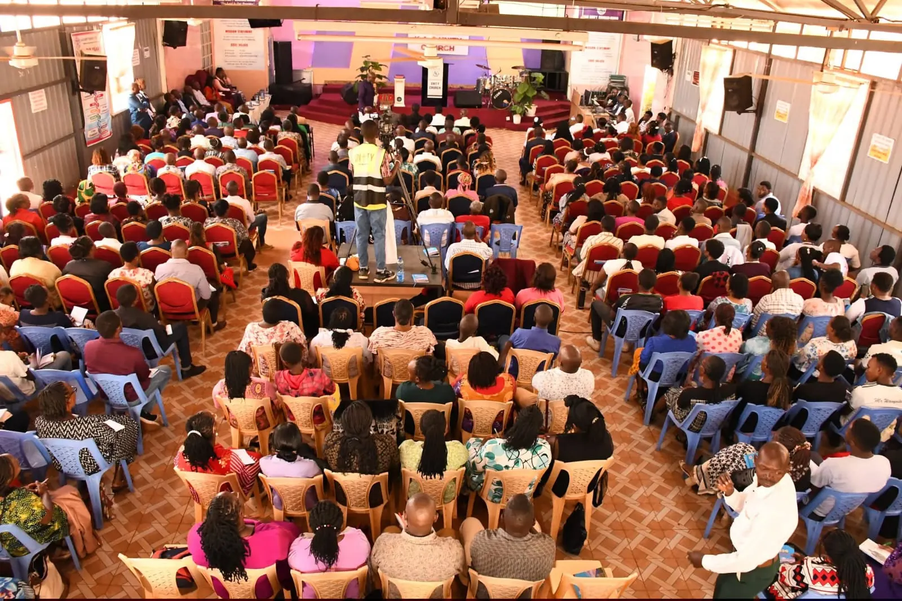
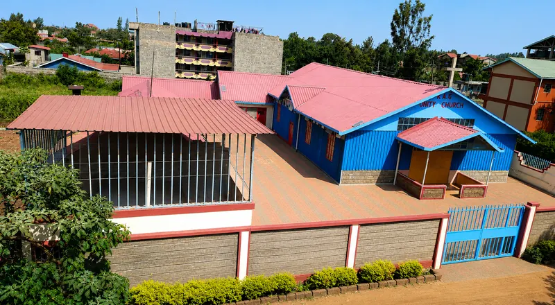
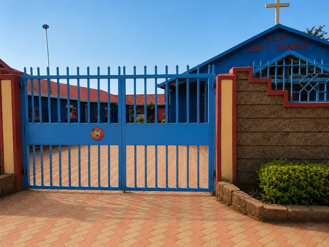
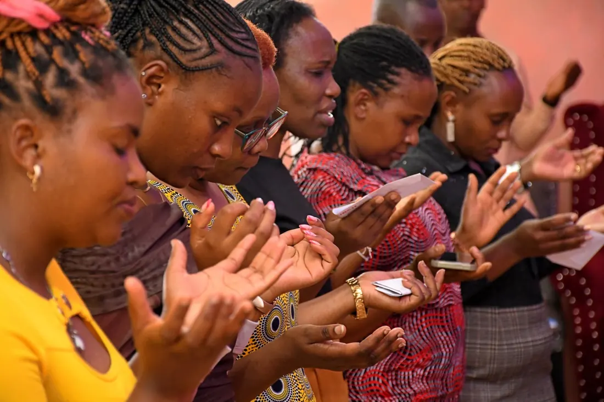
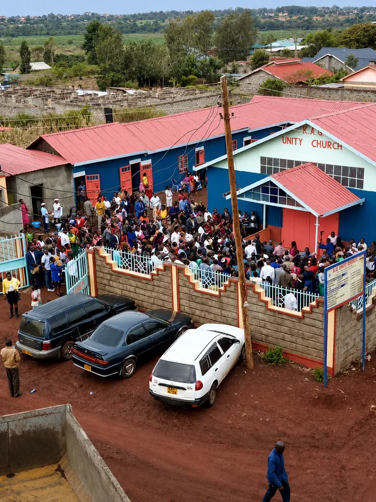
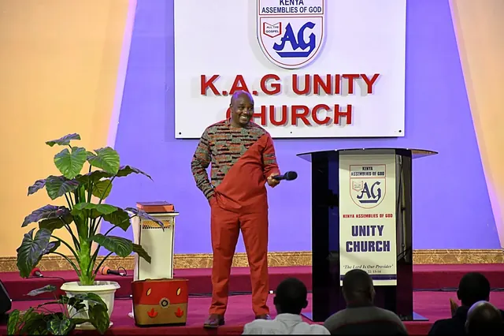
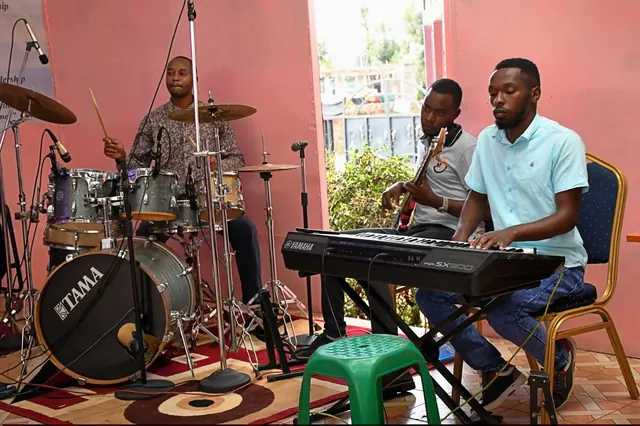

Proclaiming Christ & Nourishing Souls
To preach the whole counsel of God’s Word, lead people into a saving relationship with Jesus Christ, and disciple believers through vibrant worship, prayer and fellowship.
Whether you are seeking salvation, deeper discipleship, or a church home, our doors and hearts are open to you.

Sunday worship, Toll Ruiru

Welcome home
K.A.G Unity Church is a welcoming place of worship near the Thika Superhighway in Ruiru.
Known for its peaceful environment, clean surroundings and beautiful floral interior, it is a place where you can experience God’s presence and grow spiritually. We are part of the Kenya Assemblies of God, a movement rooted in faith, prayer and community service.
Whether you are seeking salvation, spiritual growth or a warm community of believers, you are welcome here. Our doors are open to all, so come as you are.
Gather with us
Sunday
9:00AM
Main Service · Sunday 9:00 AM Peak
Our fullest gathering of worship and the Word, with Children’s Church running at the same hour.
Find us a few meters from the Thika Superhighway.
Get DirectionsThe church is open 24 hours for private prayer. Questions? Call 0725 812019.
Inscribed on our church emblem are three words that anchor every service, prayer and outreach at Toll Ruiru: “All the Gospel.”


“For where two or three gather in my name, there am I with them.”
Matthew 18:20
Step through the blue gates just off the Thika Superhighway and you enter a sanctuary set apart for prayer, renewal and genuine Christian fellowship. K.A.G Unity Church – Toll Ruiru is a local assembly of the Kenya Assemblies of God, standing as a spiritual home for individuals, youth and families across Ruiru.
We believe the church is not merely a building, but a living family of believers redeemed by grace, grounded in Scripture, and empowered by the Holy Spirit to serve our neighbours with love and compassion.
To preach the whole counsel of God’s Word, lead people into a saving relationship with Jesus Christ, and disciple believers through vibrant worship, prayer and fellowship.
To be a house of prayer for all people in Ruiru and beyond—raising Christ-centred families, purposeful youth and servant leaders who transform their community.
The Four Cornerstones of Our Fellowship
Rooted in the Word of God and anchored by unwavering belief in the saving power of Jesus Christ.
A welcoming family bound together by love, mutual care and authentic Christian fellowship.
Passionate, Spirit-filled praise and worship that ushers every heart into God’s living presence.
Bible-centred preaching and teaching that transforms hearts, renews the mind and builds unshakable hope.
Shepherds & servants
Our pastors, worship team and ministry leaders give their time every week so that this church feels like family. You will meet them on your first Sunday.


Pulpit & Broadcast Archive
Watch messages recorded live from the sanctuary at K.A.G Unity Church – Toll Ruiru.
YouTube ChannelOne Body · Many Fellowships
Church life happens in fellowship. From Sunday morning Children’s Church to Friday night Youth and community outreach across Ruiru, discover where you belong.
Mark your calendar
The next gatherings in our regular rhythm. Special events and dates are announced on WhatsApp and Facebook.
9:00 AM
6:00 PM
6:30 PM
5:30 PM
Life at KAG Unity
Photographs from our own services and gatherings. Select any image to view it larger.
Plan your visit
Get in touch
Whether you have a prayer request, need official giving details, want to join the church, or simply want to learn more, reach out. We are here for you.
0725 812019